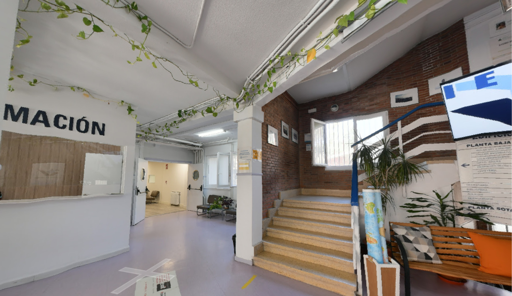
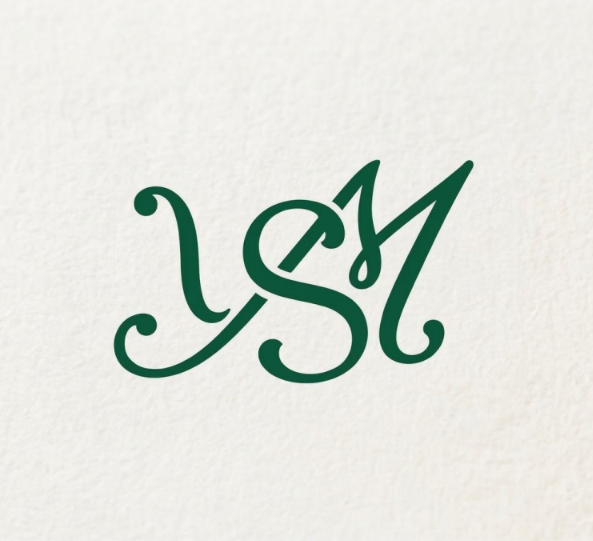

Mi instituto
IES Tetuán de las Victorias
IES Tetuán de las Victorias
Hola, mi nombre es Yasmin y actualmente curso el segundo año del ciclo formativo de Grado Superior en
Desarrollo de Aplicaciones Web (DAW).
Me apasiona el mundo de la tecnología, la programación y el diseño web, y tengo muchas ganas de seguir
aprendiendo y ampliando mis conocimientos. Durante mi formación he podido conocer diferentes lenguajes
de programación y descubrir todo lo que se puede crear a través de ellos.
Me considero una persona con interés por aprender cosas nuevas, mejorar mis habilidades y afrontar
nuevos retos. Mi objetivo es seguir formándome y adquirir experiencia para desarrollar mi futuro
profesional en este sector.
Un aspecto que destaca desde el primer momento es el cuidado del centro. Las aulas, pasillos y zonas comunes se mantienen siempre limpias y bien conservadas, lo que demuestra un gran respeto por el espacio y garantiza un entorno saludable para estudiar.

El nivel del equipo docente es realmente bueno. Se nota la experiencia que tienen y cómo dominan los contenidos, explicándolos de forma clara, práctica y siempre orientada a lo que realmente nos vamos a encontrar cuando salgamos al mundo laboral.
Hay un compromiso claro por parte del centro en conseguir que salgamos lo mejor preparados posible. Constantemente nos motivan a confiar en nuestras capacidades, proponiendo retos que nos ayudan a ganar soltura y a superarnos paso a paso.
El diseño de mi logotipo y favicono muestra las iniciales de mi nombre, Yasmin Samadi Meddah. Las
letras Y, S y M se cruzan y se unen de una forma muy elegante, formando una sola pieza que
representa armonía y mi propia marca personal.
Además, elegí el color verde en un tono oscuro y elegante porque transmite tranquilidad, frescura y
crecimiento. Este color le da un toque clásico y profesional a mi imagen, haciendo que destaque muy
bien tanto en la pantalla de una computadora o celular como en cualquier cosa que decida imprimir.
